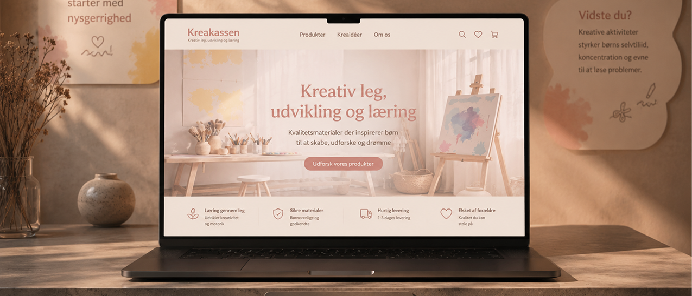
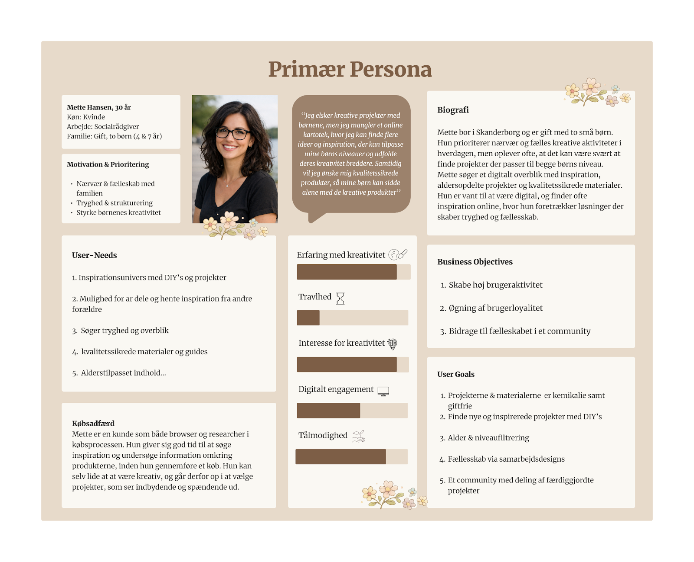
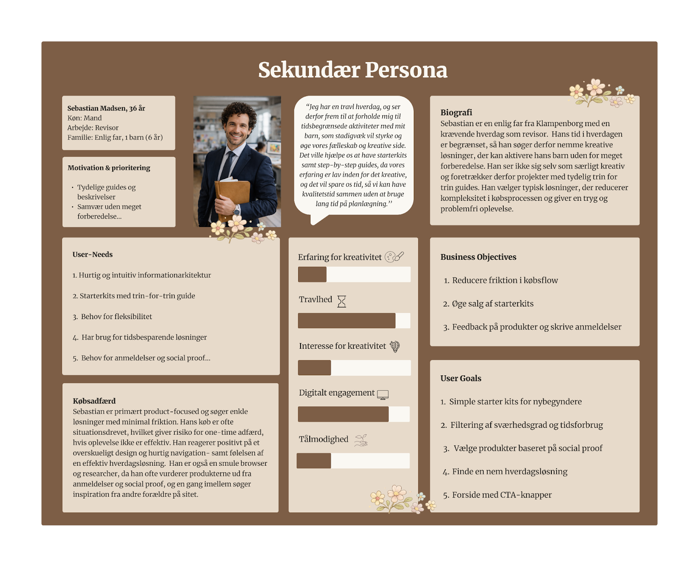
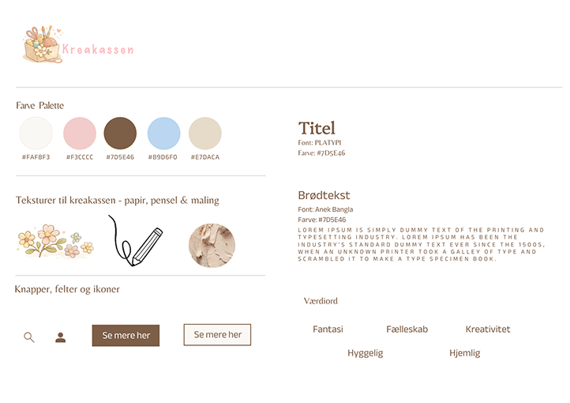
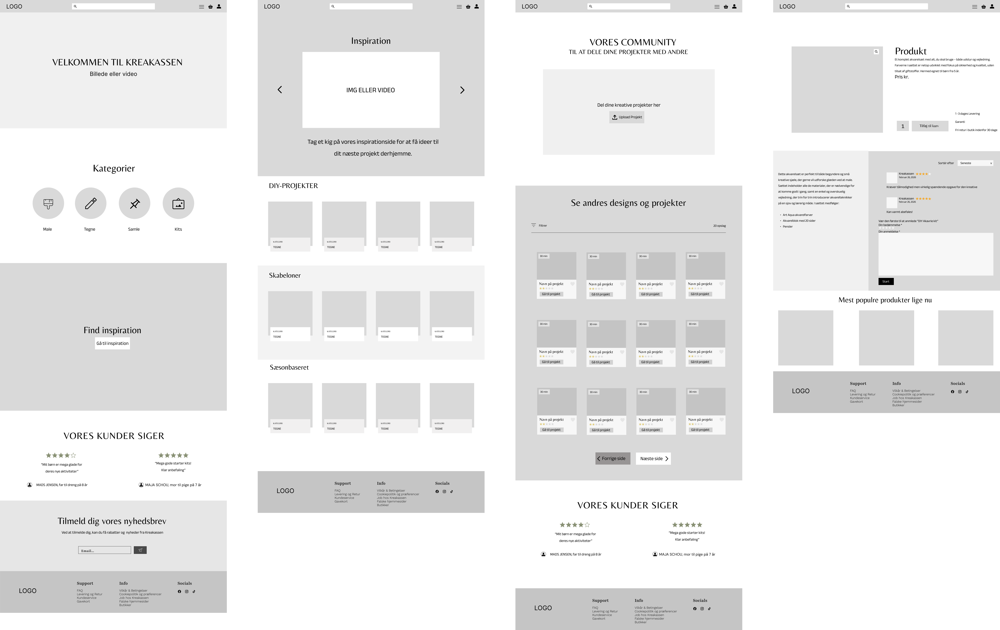

(02)
KREAKASSEN

VISITKREAKASSEN.DK
CASE
Creating a digital platform that inspires creativity and quality time.
KreaKassen is a concept designed to help parents discover creative activities they can enjoy with their children. The goal of this project was to create a user-centred platform that combines inspiration, step-by-step guides and DIY materials in one intuitive experience.
Through UX research and interface design, we explored how a digital platform could reduce decision fatigue and make it easier for busy families to plan meaningful creative activities together.
RESEARCH
Understanding the needs of modern families.
Our research combined existing studies, statistics and user insights to better understand the everyday challenges faced by families with young children. We identified a common need for inspiration, simplicity and time-efficient solutions that make creative activities easier to integrate into busy routines.
These findings formed the foundation of our Value Proposition Canvas, user segmentation and personas. Two key user groups emerged: an experienced parent looking for inspiration and community, and a busy parent seeking quick, straightforward solutions. These insights guided every design decision throughout the project.


DESIGNPROCESS
Designing an intuitive and engaging user experience.
The design process was driven by user-centered design principles and informed by our research findings. We developed a visual identity through a style tile before moving into wireframes, user flows and high-fidelity prototypes.
To create a seamless experience, we applied several UX principles, including Fogg's Behaviour Model, Hick's Law, Jakob's Law and Gestalt principles. These frameworks helped us simplify navigation, reduce cognitive load and create a familiar shopping experience tailored to our users.
Early concepts were continuously refined through first-click testing and iterative improvements, ensuring that the final design balanced usability with an engaging and inspiring visual experience.


FINAL OUTCOME
This project resulted in a responsive WordPress webshop that brings together inspiration, creative guides and DIY products within one cohesive digital experience.
By combining user research, UX principles and iterative design, we created a platform that supports both quick decision-making and creative exploration. The final solution helps parents easily discover age-appropriate activities while encouraging quality time and shared experiences with their children.